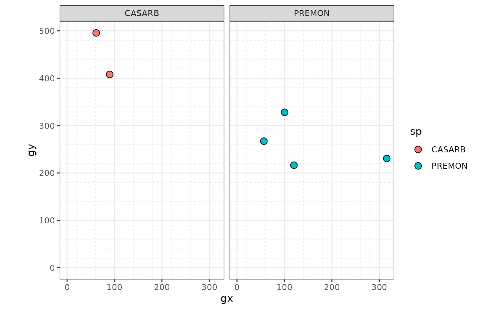
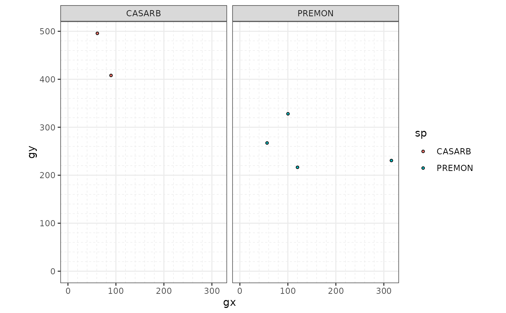
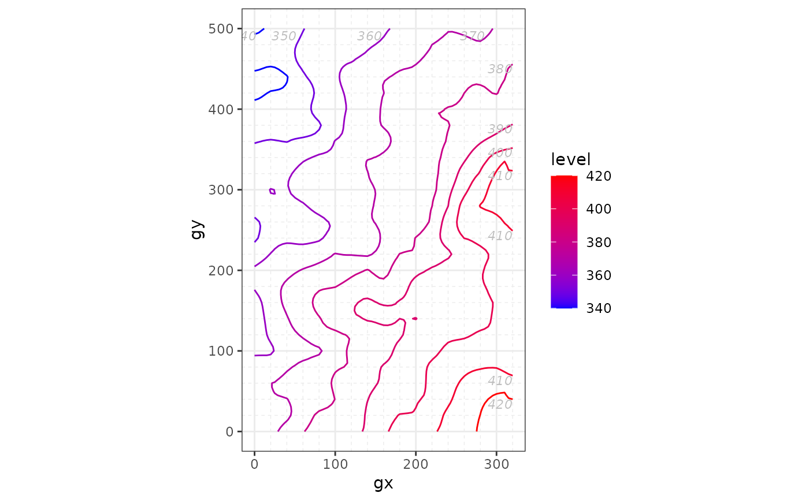
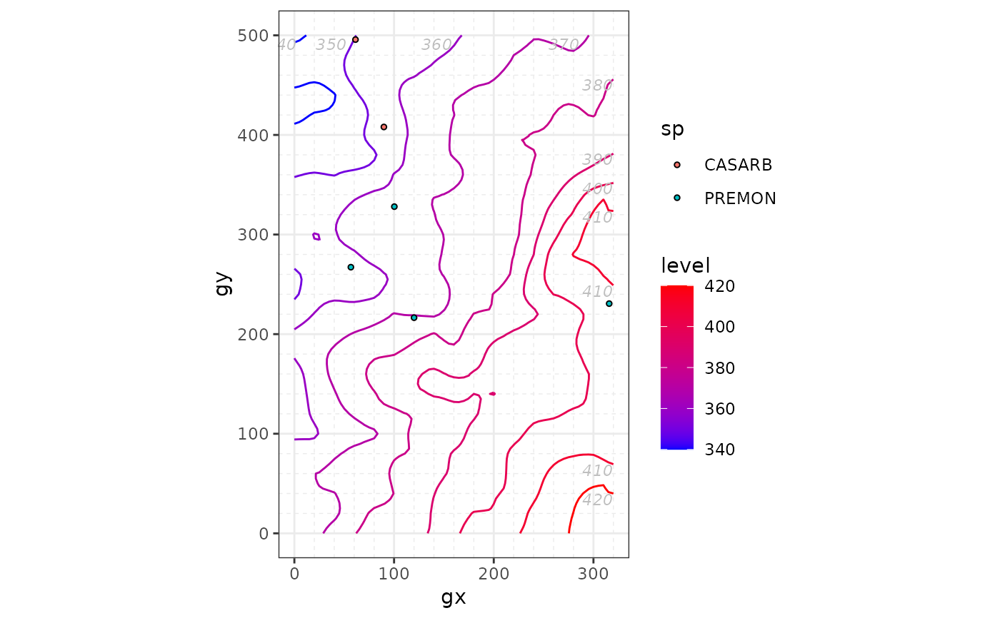
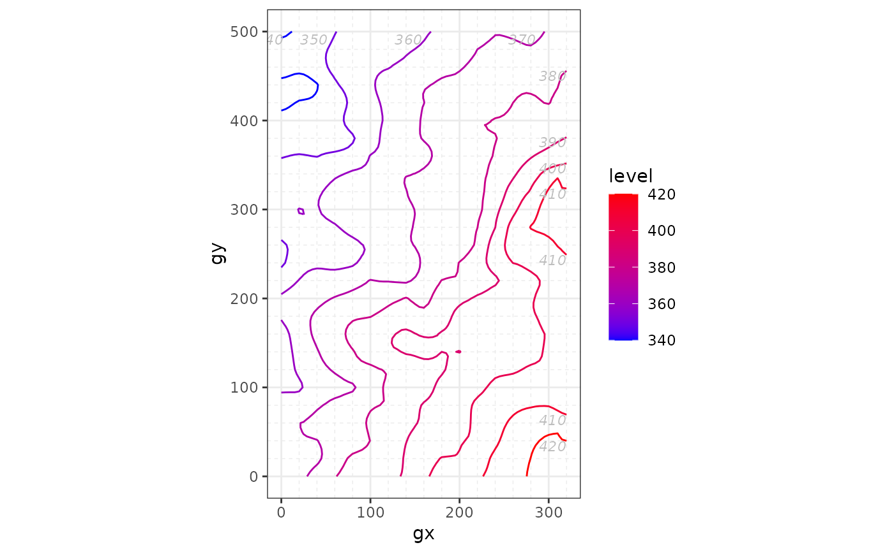
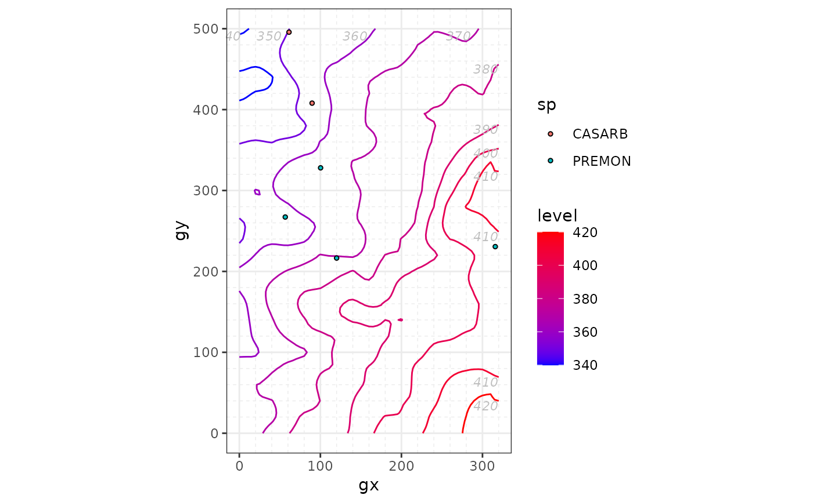

Plot the columns sp and/or elev of ForestGEO-like datasets of class 'sp'
and/or 'sp_elev'.
You can create a 'sp'
objectwith:
object <- sp(DATA-WITH-VARIABLE-sp)You can create an 'elev'
objectwith:
object <- elev(DATA-WITH-VARIABLE-elev)You can create a 'sp_elev'
objectwith:
object <- sp_elev(DATA-WITH-VARIABLE-sp, DATA-WITH-VARIABLE-elev)See Examples below.
# S3 method for sp_elev
autoplot(
object,
fill = "sp",
hide_fill_legend = FALSE,
shape = 21,
point_size = 3,
facet = TRUE,
contour_size = 0.5,
low = "blue",
high = "red",
hide_color_legend = FALSE,
bins = NULL,
add_elevation_labels = TRUE,
label_size = 3,
label_color = "grey",
xyjust = 1,
fontface = "italic",
xlim = NULL,
ylim = NULL,
custom_theme = NULL,
...
)
# S3 method for sp
autoplot(
object,
fill = "sp",
hide_fill_legend = FALSE,
shape = 21,
point_size = 3,
facet = TRUE,
xlim = NULL,
ylim = NULL,
custom_theme = NULL,
...
)
# S3 method for elev
autoplot(
object,
contour_size = 0.5,
low = "blue",
high = "red",
hide_color_legend = FALSE,
bins = NULL,
add_elevation_labels = TRUE,
label_size = 3,
label_color = "grey",
xyjust = 1,
fontface = "italic",
xlim = NULL,
ylim = NULL,
custom_theme = NULL,
...
)Arguments
- object
- fill
Character; either a color or "sp", which maps each species to a different color.
- hide_fill_legend
Logical;
TRUEhides the fill legend.- shape
A number giving point shape (as in
graphics::points()). Passed toggplot2::geom_point().- point_size
A number giving point size. Passed to
ggplot2::geom_point().- facet
Logical;
TRUEwraps multiple panels within the area of a single graphic plot.- contour_size
A number giving the size of the contour of elevation lines. Passed to
ggplot2::stat_contour()(seeggplot2::geom_contour()).- low, high
A string giving a color of the elevation lines representing low and high elevation.
- hide_color_legend
Logical;
TRUEhides the color legend.- bins
A number giving the number of elevation lines to plot.
- add_elevation_labels
Logical;
FALSEhides elevation labels.- label_size, label_color, fontface
A number (
label_size) or character string (label_colorandfontface) giving the size, colour and fontface of the text labels for the elevation lines.- xyjust
A number to adjust the position of the text labels of the elevation lines.
- xlim, ylim
A vector of length 2, for example
c(0, 500), giving the minimum and maximum limits of the vertical and horizontal coordinates.- custom_theme
A valid
ggplot2::theme().NULLuses the default themetheme_default().- ...
Not used (included for compatibility across methods).
Value
A "ggplot".
Details
autoplot(sp_elev(DATA-WITH-VARIABLE-sp) (without elevation data) is
equivalent to autoplot(sp(DATA-WITH-VARIABLE-sp)).
fgeo.plot wraps some functions from the ggplot2 package. For more control you can use ggplot2 directly.
See also
Other plot functions:
autoplot.fgeo_habitat(),
autoplot_by_species.sp_elev(),
elev(),
plot_dbh_bubbles_by_quadrat(),
plot_tag_status_by_subquadrat(),
sp_elev(),
sp()
Other autoplots:
autoplot.fgeo_habitat(),
elev(),
sp_elev(),
sp()
Other functions to plot elevation:
autoplot_by_species.sp_elev(),
elev(),
sp_elev()
Other functions to plot species:
autoplot_by_species.sp_elev(),
sp_elev(),
sp()
Examples
assert_is_installed("fgeo.x")
# Species ---------------------------------------------------------------
# Small dataset with a few species for quick examples
census <- fgeo.x::tree5 %>%
subset(sp %in% c("PREMON", "CASARB"))
autoplot(sp(census))

# Skip R CMD check for speed
# \donttest{
# Customize
autoplot(sp(census), point_size = 1)

# Elevation -------------------------------------------------------------
elevation <- fgeo.x::elevation
autoplot(elev(elevation))
 # Skip R CMD check for speed
# Same as `autoplot(elev(elevation))`
autoplot(elev(elevation$col))

# Customize
autoplot(elev(elevation), contour_size = 1)
# Species and elevation -------------------------------------------------
autoplot(sp_elev(census, elevation), facet = FALSE, point_size = 1)

# }
# Skip R CMD check for speed
# Same as `autoplot(elev(elevation))`
autoplot(elev(elevation$col))

# Customize
autoplot(elev(elevation), contour_size = 1)
# Species and elevation -------------------------------------------------
autoplot(sp_elev(census, elevation), facet = FALSE, point_size = 1)

# }